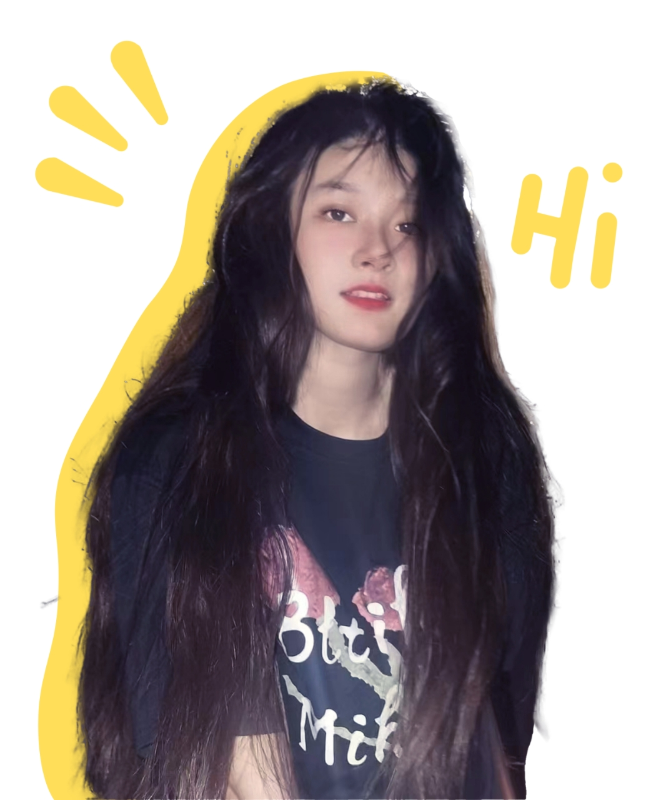

Welcome to my website
A personal portfolio inspired by Apple-style design

About Me
Design · Technology · Human Experience
I explore how technology shapes everyday life.
I focus on clarity, intention, and emotion.
This space documents my long-term growth.
Selected Projects
Smart Trash Can
Health Monitoring System
Mobile App Design
Embedded Device Project
Project 5
Project 6
Project 7
Project 8
Project 9